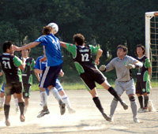
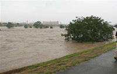
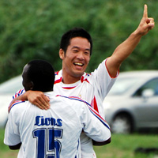
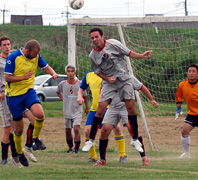
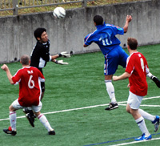
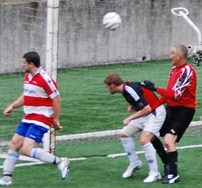

Albion Claw Win From Battle With Panthers
Yoyogi NHK, Saturday 29th September,
The NHK Ground, Yoyogi. Hard to believe that it's only a few months short of a quarter of a century since this ground provided the venue for this reporter's first game of competitive football in Japan. In those days, with a few ragged tufts of green poking forlornly through the soil, the field was still trying to kid itself that it was a grass pitch, in much the same way that Ralph Coates or Bobby Charlton used to try to kid themselves that they had a full head of hair. more ...
TC.
Geckoes On The Rampage...
Hachioji Park, Saturday 22nd September,
The Geckoes had their biggest league win for two seasons with a convincing 4-1 win over Sala in a repeat of the Footy Japan Cup Final.. The game started with the Geckoes kicking off and after a combination of errors Sala had the first corner of the game. Not the start that we had in mind, especially after Rob had highlighted Sala’s strength at set-pieces in the team talk and 15 seconds later the Geckoes were defending one. more ...
RK.
YCAC & BEFC do Battle in 8 Goal Thriller
Todoroki, Monday 24th September,
YCAC's TML5 campaign got off to a belated start with a hard fought victory over The Embassy under the lights of Todoroki on Monday night. Not even my 5th Special Brew moves me to describe it as a classic but it was certainly a ding-dong battle, end to end stuff or even a pulsating affair just to use up my quota for cliches for the entire season in one paragraph. more ...
ST.
Woszi like?! Rou on target as BFC do Hibs
|  |
|
Rouven gets his head to a last minute corner, to bag the game's only goal.
|
Oi Futo, Saturday 22nd September,
If you can't get to Waitrose, go to Oi Futo Dirt. An omelette-fest this was not, but champions BFC continued their 100 percent start to the season with a 1-0 win over Hibs after a late twist. more ...
PC.
Albion Lead the Way in Div 3.
Todoroki, Sunnday 16th September,
Given that both teams had started the league with a victory, albeit Albion with a walkover from Shane F.C. ,this game began as a rather tentative affair with both sides conscious of mistakes. Played in searing heat on a narrow pitch (no one can ever complain about St Mary’s ever again) it had seemed that chances would come late in the game due to tiredness. more ...
GC.
BFC Maintain Perfect Start.
Hachioji Park, Monday 17th September,
Groundhog Day for champions BFC as they beat the Saitama JETS by their favourite 4-1 scoreline to make it two wins out of two this season.Vags beating BEFC 1-0 put them third in the table and meant many of us can expect some long delays applying for new passports. more ...
BC.
JETS Brought Back to Earth.
Hachioji Park, Monday 17th September,
Saitama Jets crashed to a heavy defeat against reigning champions BFC at Hachioji Park on Monday evening with all the goals coming in the second half. Despite the one-sided nature of the score the Saitama team matched the British for long periods and will feel a little aggrieved at the margin of defeat. more ...
RK.
Vagabonds Secure First Win.
Fuchu No Mori Monday 17th September,
The Vags and Embassy picked up today where they left off last season with a repeat of the tight, hard fought but very fairly contested game that marked last season’s league encounter (finished 2-2 thanks to Adrian’s last minute equaliser). Indeed the result was more or less the only difference today. more ...
RS.
Sleepless in Seattle, Pointless in Fuchu!
Fuchu No Mori Monday 17tth September,
In the baking Fuchu sun the British Embassy and the BFC Vagabonds played out a hard-fought contest which was vastly more entertaining than any Tom Hanks/Meg Ryan rom-com. But then what isn't? more ...
SC.
Swiss Foiled by Holiday Traffic
Fujitsu Big Circus Saturday 15th September,
The Hibs came away with a forfeit win Saturday, after the Swiss fell victim to holiday traffic and arrived at the rustic Big Circus pitch 45 minutes after kick-off time. But the two teams were eager for a match and agreed to a friendly, which was as hard-fought as any of our regular matches have been more ...
JA.
Anyone for Water Polo?
|  |
|
Typhoon Vicky dumped heaps of water in Tokyo's rivers causing lots of flooding.
|
Misato, Saturday 9th September,
Typhoon Vicky swept it's way across Tokyo and the Kanto plain earlier this week, swelling many river to the tops of their banks and leaving the Misato pitches under meters of water.
Despite the weather being ok following the storm, the large amount of rainfall in the mountains and countryside has left the waterways straining to cope. Already 2 weekends of matches (12 matches) have been cancelled at Misato and only thanks to volunteers finding grounds have we been able to save some matches next weekend.
FJ.
Lions Set the Pace.
|  |
|
Tatsuya Ando Celebrates scoring Lions 2nd.
|
Misato, Sunday 2nd September,
Lions would like to start this report by applauding a rare-to-see sportsmanship from the France left back, who kicked the ball out of play after going past the Lions right-back who pulled up with a hamstring. Although the France player could've put in a dangerous cross, especially that they were 1-0 down at the time!
All respect to France FC, talented, strong, and true sportsmanship....how football should be!
The beautiful new surface in Misato was home to a brilliant game that saw France FC wear bibs, whilst Lions wore the national French kit. The game started strongly as expected, with midfield being the battle ground.
more ...
HS.
10 Unforgettable goals!
|  |
|
Barbarian Ben McMakin clears a corner.
|
Misato, Sunday 2nd September,
5-all thrillers are unforgettable matches where people can remember each thrilling event in the game, aren’t they?! Well, I didn’t play in the 5-all ding dong between the Clash and Zion last season and don’t think I’ve ever seen one at a stadium or on TV. I do remember a 4-4 thriller between Charlton and West Ham where Paul Kitson scored a hat-trick for the Hammers and a young Jermaine Defoe the other while for Charlton Euell and Johansson got a brace each with Johansson scoring his second and the final equaliser of the game in the last minute. Git. Well anyway come the final whistle I thought that the Clash had won this game at Misato 5-4 and I was in it so my memory cannot be relied on very heavily, but then again the referee agreed with me until corrected by most but me and a Barbarians defender who thought it was 4-4. Sorry to bring that up Jorge. more ...
CA.
Jet's Win with Gildart Brace.
Hachioji Park, Saturday 1st September,
Saitama Jets started the new season as they ended the last with a victory over the Wall Street Geckoes at Hachioji Park through two second-half goals from Canadian poacher Nate Gildart in an open and entertaining encounter. more ...
RK.
Winning Start For Champions
|  |
|
Shawn Kee scores on his debut for BFC.
|
OiFuto, Saturday 1st September,
Skipper Jon Day told his team at half time what he wanted, and the team duly obliged as BFC started the defence of the TML Division 1 title with a 3-0 win over the newly promoted British Embassy FC. Goals from 17 year old Shawn on his debut, a clinical penalty by Carlos and a fine individual goal from another debutant, Jerry, saw off the Embassy in the season opener for both teams.
Lining up with Jason in goal, Leigh, James Mulligan, Brian and Ryo in defence, BFC was determined to keep tight at the back - a cornerstone of their success from last year. Pablo and Carlos worked the center of midfield putting in a huge effort, and with Shosuke and Garry starting on the wings there was plenty of creativity on display. Up front, a very young and talented forward line of Dan and Sean sought to unsettle the Embassy backline with their pace and ability on the ball. more ...
BD.
Toothless Sala Plough Familiar Furrow
|  |
|
A front post cock-up from a corner sees Sala gift Swiss a 2nd own goal in a 2-0 loss.
|
OiFuto, Saturday 1st September,
“The better team lost today.” Kirk commented to me as the final whistle blew, and in essence he was correct. Sala were the better team on display in terms of possession, passing, pressure and lots of other words that start with p. Unfortunately they weren't the better team in the rather more crucial area of getting the three points. more from Sala ...
RC.
The Swiss weren’t given an easy task in their first game of the ’07-’08 season, matched up with traditional rivals Sala. Great day on the turf at Oifuto, that is one of the benefits of playing against the league organizer, some quality pitches to play on. Sala looked its familiar self with a solid defensive lineup, speed across the midfield, but the same forward line which meant goals were going to be tough to come by. more from Swiss ...
KN.
|